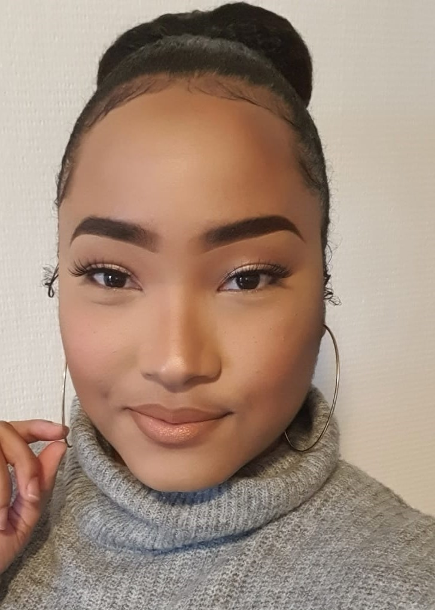

Charry Profas
Hallo, mijn naam is Charetty Profas. Ik ben 25 jaar oud en ik studeer Communication & Multimedia Design aan de Hogeschool Rotterdam. Ik kom van Curacao, een klein eiland in de Caribische Zee.
In mijn vrije tijd lees ik online boeken of bekijk ik video's op YouTube met betrekking tot verschillende onderwerpen die mijn algemene kennis kunnen uitbreiden. Mijn favoriete onderwerpen zijn geneeskunde, schoonheid en kunst. Iets wat ik ook graag doe is naar muziek luisteren. Wanneer ik dit doe maak ik ruimte om inspiratie op te doen om nieuwe dingen te creëren.
Ik ontdekte deze opleiding door een nu 4de jaars student. De dingen die hij deed en de uitleg die hij me gaf leken me super interessant en leuk en ik kon zien dat deze opleiding echt iets voor mij was. Nadat ik me had ingeschreven en met succes mijn studiekeuzecheck had gedaan, ben ik begonnen met Communicatie en Multimedia Design. En ik kan zeggen dat het een van mijn beste beslissingen is geweest.
Van mij kun je kwaliteit verwachten in wat ik maak. Ik doe mijn uiterste best om een uniek product af te leveren. Mijn passie voor ontwerpen en creëren is waar ik het meest trots op ben. Sommige mensen denken dat ik een perfectionist ben, maar welke ontwerper is dat niet. Ik bouw graag dingen vanaf nul. Ik gebruik graag mijn handen om unieke stukken te maken. Een belangrijke reden hiervoor is dat ik op die manier de nadruk kan leggen op details. Als student communicatie en multimedia design heb ik geleerd dat iedereen kan creëren. Iedereen heeft het vermogen om iets te maken, maar ik denk dat niet iedereen de passie heeft om iets unieks te maken.
We zijn mensen en we zijn niet perfect. Ik ben niet altijd geduldig en soms raak ik geïrriteerd als een idee maar niet van de grond komt. Maar dat is geen reden om niet mijn best te blijven doen om iets te bereiken. Fouten maken is menselijk en van fouten moet je leren en zorgen dat het niet weer gebeurt.
Al met al kan ik zeggen dat ik een toegewijde student ben die zich wil ontwikkelen. Ik wil zoveel mogelijk leren en ervaring opdoen om elke dag een betere versie van mezelf te worden. Ik wil in de toekomst een succesvolle carrière hebben. Ik zou graag in een team werken waar ik me thuis kan voelen. Waar mijn ideeën een plaats hebben en waar er kansen zijn om te groeien in wat ik doe. Ik hoop op een dag mijn eigen UI bureau te hebben.